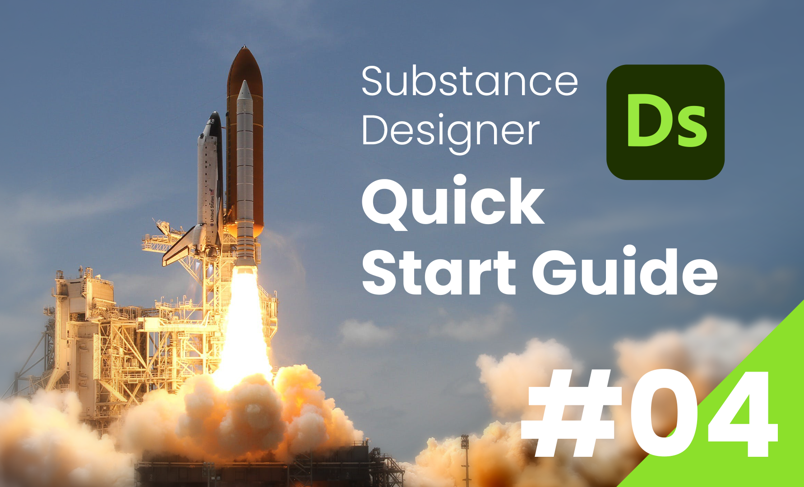
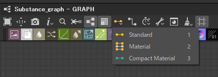

SubstanceDesigner
Substance Designer クイックスタートガイド
第4回：ハイトマップ
2024/02/10

前回 は、グラフについて基本的な機能を解説しました。
今回は、マテリアルを作成するための下準備の手順と、マテリアルのベースとなる ハイトマップ について解説します。
ワークフロー
PBRマテリアルを作成するには、最終的にベースカラー・ノーマル・AOなどのマップを作る必要があります。
ノードベースでそれらのテクスチャを作るには、上流の工程では一貫して「ハイトマップ」で作業するのが合理的です。
理想的なハイトマップが得られた段階で、ノードを用いてそれぞれの最終的なマップへと変換していきます。
以降では、簡単なマテリアルを作成しながら実際の工程を解説していきます。
3Dビュー設定
まず、「Metallic Roughness」テンプレートを使用して新規グラフを作成します。
最初の工程では、これから作成するマテリアルを 3Dビューで確認する設定 を行います。
デフォルトでOutputノードに接続されているノードは、初期状態の見た目を適用させるためのものなので削除して構いません。
そして、BaseMaterial ノードをグラフに配置します。
続いて、BaseMaterialノードの 出力ピンを各Outputノードに接続 していきますが、目視で接続していくのは少し手間です。
そこで、マテリアルモード という機能を活用します。
マテリアルモード

コンパクトマテリアル モードを使用することで、ノードの複数のチャンネルの出力ピンが、１つのコネクションに集約されます。
各マテリアルモードのショートカットは、キーボードの 1~3 に割り当てられています。
コンパクトマテリアルモードで、BaseMaterialノードの出力ピンを Outputノードにドラッグすると、各チャンネルへとコネクションが分岐します。
出力のコネクションがどのOutputノードに接続されるかは、Outputノードの Usage プロパティの設定に依存します。
3Dビューへのアサイン
次に、BaseMaterialノードのマテリアルの見た目を、3Dビューで確認できるように設定します。
ノードを3Dビューのマテリアルにアサイン するには、ノードを3Dビューのモデル上に 右マウスボタンドラッグ します。
これで、BaseMaterialノードの出力結果を、リアルタイムで3Dビューで確認できるようになりました。
ハイトマップの作成
では、マテリアルの見た目を確認する下準備はできたので、ここからの工程では 実際にマップを作成していきます。
まずは、ベースとなる ハイトマップ について解説します。
ハイトマップとは
ハイトマップ (HeightMap) とは、その名の通り「表面の凹凸の高さ」を表現するテクスチャです。
0~1 のグレースケールで高さの情報を表し、起伏は 0(=黒) が最も深く、1(=白) が最も高くなります。
中間値の 0.5(=グレー) は高さのないフラットな表面を表します。
例えば、段ボールのような波打った表面をハイトマップで表現すると、以下のようになります。
このように、表面の起伏を横から見たグラフ のようにとらえると理解がしやすいでしょう。
まとめ
今回は、マテリアルを作成するための下準備の手順と、ハイトマップの概要について解説しました。
次回は、ハイトマップをベースに各マップを作成する手順と、マテリアルを書き出す方法を解説したいと思います。